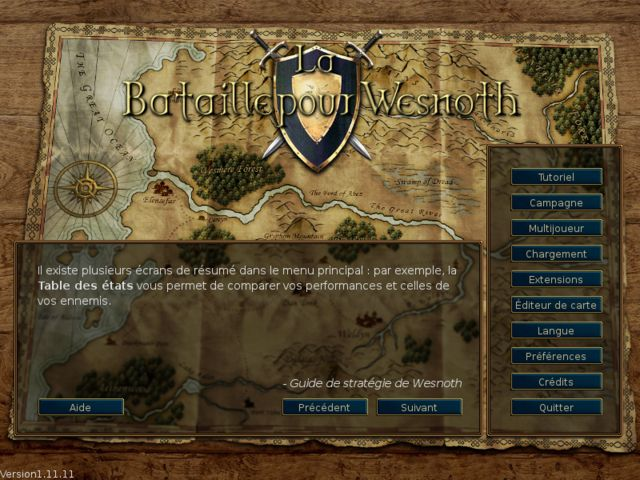
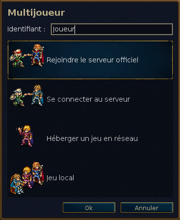
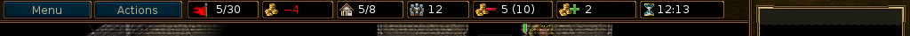
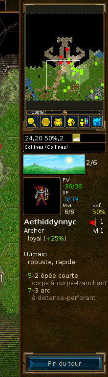
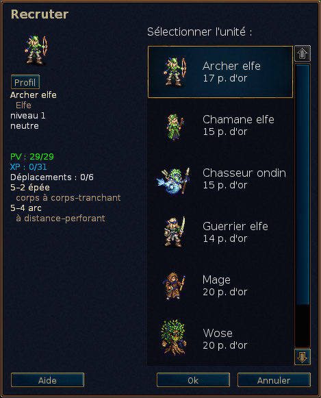

Table des matières
Liste des tableaux
- 2.1. Contrôles généraux et raccourcis clavier
- 2.2. Raccourcis clavier dédiés au tour des unités
- 2.3. Raccourcis clavier spécifiques au mode planification
- 2.4. Raccourcis clavier spécifiques au multijoueur
- 2.5. Autres raccourcis
- 2.6. Autres raccourcis
- 2.7. Raccourcis clavier et contrôles spécifiques à Pandora
- 2.8. Moment de la journée et dégâts
- 2.9. Bonus d'expérience en fonction du niveau de l'ennemi tué ou affronté
- 2.10. Orbes
« Bataille pour Wesnoth » est un jeu de stratégie au tour par tour, avec un thème heroic-fantasy.
Construisez une grande armée, en transformant progressivement les nouvelles recrues en vétérans endurcis. Au cours des parties suivantes, rappelez vos meilleurs soldats pour former un ost mortel contre qui personne ne pourra résister ! Embauchez des professionnels et organisez votre troupe pour qu'elle puisse combattre sur toutes sortes de terrains et quelque soit l'ennemi.
Wesnoth met en scène différentes sagas. Vous pourrez combattre les orcs et les bandits des marches du royaume, guerroyer aux côtés des dragons des pics embrumés ou des elfes des grandes forêts d'Aethenwood, vous allier aux nains des grandes cavernes de Knalga ou aux ondins de la Baie des Perles. Vous lutterez pour regagner le trône de Wesnoth ou apprendrez à déployer vos pouvoirs sur les morts-vivants pour régner sur les terres des mortels. Vous pourrez mener votre tribu d'orcs à la victoire contre les humains qui veulent s'approprier votre territoire.
Vous pourrez choisir parmi plus de 200 types d'unités (infanteries, cavaleries, archers, mages, et bien d'autres encore) et participer aussi bien à des escarmouches qu'à des affrontements d'immenses armées. Vous aurez également la possibilité de jouer avec vos amis, ou avec des inconnus, dans des batailles multijoueurs avec une ambiance médiévale fantastique.
« Bataille pour Wesnoth » est un logiciel open-source constamment amélioré par une communauté de volontaires dynamiques. Vous pouvez créer et personnaliser vos propres unités, écrire vos propres scénarios, voire programmer vos campagnes. Les éléments maintenus par les utilisateurs sont disponibles sous forme d'extensions, dont les meilleures sont intégrées aux versions officielles du jeu.
Les terres connues du Grand Continent sont principalement divisées en trois zones : les Terres du Nord, sans lois vraiment connues ; le royaume de Wesnoth et sa principauté Elensefar ; et le domaine des Elfes au sud-ouest, à Aethenwood et au-delà.
Le royaume de Wesnoth repose au centre de cet espace. Ses frontières sont le Grand Fleuve au nord, les Petites Collines à l'est et au sud, la lisière d'Aethenwood au sud-ouest, et l'océan à l'ouest. Elensefar, ancienne province du royaume, est bordée par le Grand Fleuve au nord, une vague frontière avec Wesnoth à l'est, la Baie des Perles au sud, et l'océan à l'ouest.
Les Terres du Nord sont des territoires hostiles au nord du Grand Fleuve, peuplés de groupes d'orcs, de nains, de barbares et d'elfes. Au nord et à l'est se trouve la forêt de Lintanir, royaume des mystérieux Elfes du Nord qui mènent secrètement leurs propres affaires.
Des villages dispersés sur le territoire vous permettront de soigner vos troupes et de réunir l'or nécessaire à leur entretien. Vous devrez également traverser des montagnes et des fleuves, des collines et des forêts, des toundras et des prairies. Chacune de ces zones abrite diverses créatures adaptées à leur environnement qui pourront se déplacer et lutter plus facilement sur un terrain familier.
Le monde de Wesnoth est empli d'humains, d'elfes, de nains, d'orcs, de dracans, de sauriens, d'ondins, de nagas et d'autres races encore plus obscures et formidables. Les morts-vivants et les fantômes hantent les régions maudites, tandis que les monstres se terrent dans les ruines et les donjons. Chaque espèce s'est adaptée au terrain qu'elle habite : les humains occupent surtout les prairies tempérées, les orcs et les nains occupent principalement les montagnes et les cavernes, les elfes règnent sur les forêts, les ondins et les nagas dominent les océans ou les fleuves.
Pour des raisons de jouabilité, les races sont regroupées en factions. Par exemple, les orcs coopèrent avec les trolls, et les elfes ou les nains avec les humains. D'autres factions reflètent des divisions de la société humaine les loyalistes contre les hors-la-loi, par exemple. Dans la plupart des campagnes, vous contrôlerez des unités d'une seule faction. Mais parfois, celles-ci s'allient et vous en affronterez plusieurs types au cours du scénario.
Au démarrage de Wesnoth, vous voyez une image de fond sur laquelle se superpose une colonne de boutons appelée « Menu principal ». Seule la souris permet de les utiliser. Nous recommandons aux impatients de cliquer sur le bouton « Langage » pour choisir la langue du jeu ; puis cliquez sur le bouton « Tutoriel » pour lancer la partie d'apprentissage ; celui-ci achevé, commencez par la campagne « L'Histoire des deux frères », en appuyant sur le bouton « Campagne » et en choisissant ce titre dans la liste qui s'affiche.

- Tutoriel
- Le tutoriel est un jeu simplifié mais en condition réelles, qui vous enseigne les mécanismes de base. L'important n'est pas de gagner ou de perdre, mais d'apprendre. Cliquez sur le bouton « Tutoriel » pour commencer ; vous incarnerez le prince Konrad ou la princesse Li'sar, conseillés par le grand mage Delfador ; faites attention, ou il pourrait vous transformer en grenouille.
- Campagne
- Wesnoth a d'abord été conçu pour jouer des campagnes. Ce sont des séries de scénarios qui se suivent. Appuyez sur ce bouton pour en commencer une nouvelle. Vous verrez alors la liste des campagnes disponibles, complétée par les téléchargements que vous aurez peut-être faits. Choisissez votre campagne et appuyez sur « Ok » pour commencer ou sur « Annuler » pour revenir à l'écran précédent. Chacune a un niveau de difficulté : facile, moyen (normal), difficile. Nous vous conseillons le niveau moyen, qui est un bon défi pas trop difficile ; vous ne pourrez pas modifier la difficulté après avoir commencé. En cas de réel problème stratégique, nous vous suggérons de vous référer aux stratégies de base, qui vous aideront sûrement.
- Multijoueur
- Appuyez sur ce bouton pour jouer des scénarios, seul ou à plusieurs ; vous pouvez jouer sur internet ou sur votre machine, contre l'ordinateur ou contre des humains. Une fenêtre s'affichera pour vous permettre de choisir le mode de jeu. Pour en savoir plus, consultez scénarios.
- Charger
- Appuyez sur ce bouton pour charger un jeu. Une fenêtre affichera la liste des jeux déjà sauvegardés ; choisissez-en un et cliquez sur « Ok » pour jouer, ou sur « Annuler » pour revenir au menu principal. Si vous sélectionnez un film, vous pourrez cocher la case « Film » pour regarder tous les mouvements faits du début à la fin d'une partie.
- Extensions
- Appuyez sur ce bouton pour accéder au serveur où les joueurs stockent leurs multiples créations, comme des cartes, des campagnes, ou des ères mutijoueurs (factions supplémentaires pour les jeux multijoueurs). Le bouton « Enlever des extensions », vous permettra de supprimer celles qui vous ne conviennent plus.
- Éditeur de carte
- Cliquer sur ce bouton pour lancer l'éditeur de carte qui vous permettra de créer vos propres campagnes ou des scénarios multijoueurs.
- Langue
- Appuyez sur ce bouton pour choisir la langue du jeu ; appuyez sur « Ok » pour valider, ou sur « Annuler » si vous désirez continuer avec la langue initiale. Wesnoth démarre la première fois en anglais ou en tenant compte des préférences linguistiques du système si elles ont pu être déterminées.
- Configuration
- Appuyez ici pour changer les paramètres par défaut.
- Crédits
- Appuyez ici pour voir les principaux contributeurs de Wesnoth. Vous pourrez les joindre sur irc.freenode.org:6667, #wesnoth.
- Quitter
- Cliquez sur ce bouton pour quitter Wesnoth
- Aide
- Appuyez sur ce bouton pour afficher l'aide du jeu, qui vous donnera les informations sur les unités et les éléments associés. L'essentiel de ce que vous y trouverez est décrit dans ce manuel.
- Suivant
- Appuyez sur ce bouton pour lire l'astuce suivante décrite dans le « Codex de Wesnoth ».
- Précédent
- Appuyez sur ce bouton pour lire l'astuce suivante décrite dans le « Codex de Wesnoth ».
Il y a deux façons principale de jouer à « Bataille pour Wesnoth » :
- Jouer des séries de scénarios, nommées campagnes, contre l'ordinateur.
- Jouer un scénario contre l'ordinateur ou des adversaires humains.
Les campagnes sont des batailles successives reliées entre elles par une histoire. Une campagne type possède de 10 à 20 scénarios. Leur principal avantage est de pouvoir construire une armée. Les troupes survivantes sont conservées à la fin de chaque victoire pour être disponibles pour les scénarios suivants, et vous les conserverez même si vous ne les utilisez pas immédiatement.
Les campagnes constituent la première façon de jouer à Wesnoth, sûrement la plus amusante, et sont conseillées aux débutants, pour apprendre.
Un scénario prend de 30 minutes à deux heures. C'est la façon la plus rapide de jouer, mais vos unités ne sont pas sauvegardées et vous ne pouvez utiliser les troupes spécifiques aux campagnes. Vous pouvez affronter l'ordinateur ou les joueurs, sur une même machine ou en réseau. Utilisez le bouton « Multijoueur » du menu principal pour y accéder.
La plupart des jeux multijoueurs confrontent les joueurs via internet ; vous pouvez aussi en faire sur votre réseau local si vous en avez un. Toutes ces parties sont coordonnées par le serveur multijoueur de Wesnoth, et peuvent prendre de 1 à 10 heures, en fonction du nombre de participants et de la taille de la carte. La durée moyenne est de 3 à 7 heures. Les jeux peuvent être sauvés et chargés autant de fois que nécessaire : une partie peut durer de 1 à 2 semaines, même si le temps réel de jeu est faible. Vous ne pouvez pas transférer des unités d'un jeu multijoueur à un autre : la construction de forces armées expérimentées n'est possible qu'au sein du scénario.
Plusieurs options apparaissent après avoir appuyé sur le bouton « Multijoueur » :

Ceci sera votre nom sur le serveur multijoueurs. Si vous possédez un compte sur les forums de Wesnoth, vous pouvez utiliser les mêmes identifiants de connexion et mots de passe pour vous connecter au serveur officiel. Une invite vous demandera de saisir un mot de passe si c'est nécessaire. Vous ne pouvez pas utiliser un nom déjà enregistré sans son mot de passe.
Cette option vous connecte directement au serveur officiel. Vous arriverez au vestibule où vous pourrez créer vos parties, où plusieurs jeux sont déjà en cours, et où vous trouverez probablement d'autres personnes en attente d'une nouvelle confrontation.
Cette option ouvre une fenêtre permettant de saisir l'adresse de la machine à laquelle se connecter. Le bouton « Voir la liste » affiche la liste des serveurs secondaires disponibles en cas de défaillance du serveur principal.
Une liste complète des serveurs officiels ou maintenus par des joueurs est disponible sur le site : Serveurs multijoueurs.
Vous pouvez aussi vous connecter à des serveurs hébergés par d'autres joueurs via cette option. Dans ce cas, entrez simplement l'adresse et le numéro de port (15000 par défaut). Par exemple, pour vous connecter à un serveur tournant sur une machine dont l'adresse est 192.168.0.10, vous devrez saisir 192.168.0.10:15000.
Pour pouvoir commencer un jeu multijoueur sans utiliser un serveur externe, vous devrez faire office de serveur en démarrant le serveur qui s'appelle habituellement wesnothd. Ce programme est démarré automatiquement en arrière-plan quand vous sélectionnez cette option. Il s'arrêtera automatiquement une fois que tous les joueurs auront quitté le serveur. Les autres joueurs doivent pouvoir accéder à votre port 15000 en TCP pour pouvoir jouer avec vous sur le serveur. Si vous utilisez un pare-feu, vous devrez sûrement en changer les paramètres pour ouvrir ce port aux connexions entrantes et diriger son trafic réseau vers le serveur. Le paramétrage du pare-feu n'a normalement pas besoin d'être modifié pour se connecter aux serveurs publics ou privés.
Cela crée un jeu local sur votre machine. Vous pouvez l'utiliser en chaise tournante, où tout le monde joue sur le même ordinateur ; ces parties durent autant que celles via internet. Ou vous pouvez affronter l'IA, plutôt que des humains ; cela est une bonne façon de se familiariser avec les cartes multijoueurs avant de défier des adversaires en chair et en os, et de tester les unités des différentes factions. Ou vous pouvez mélanger tout ça, par exemple en jouant avec un ami contre l'ordinateur.
Indépendamment des scénarios ou des campagnes, la disposition de l'écran de jeu est la même. L'essentiel est rempli par une carte qui montre ce qui se passe sur le terrain. Autour, différents indicateurs fournissent des informations utiles, détaillées ci-dessous.

En haut de l'écran, de gauche à droite, voici les indicateurs principaux :
- Bouton « Menu »
- Bouton« Actions »
- Compteur de tours (tour actuel/nombre maximum de tours)
- Votre or
- Villages (vos villages/nombre total de villages)
- Nombre total d'unités
- Votre entretien
- Votre revenu
- Temps restant (durant les jeux multijoueurs chronométrés)

En droite, de haut en bas, vous voyez :
- La carte, à échelle réduite
- Position (coordonnées en x et y) et capacité de défense et mouvement de l'unité sélectionnée sur l'hexagone
- Type de terrain
- L'indicateur du moment de journée
- La description résumée de la dernière unité sélectionnée
- Le bouton de fin de tour
Au commencement d'un scénario ou d'une campagne, seules quelques unités seront sur la carte. L'une d'entre elles sera votre chef, identifiable par une petite couronne en or. Votre commandant sera généralement placé dans un château, sur un hexagone spécial appelé « donjon ». Seul ce type de case permet de recruter ou de rappeler des troupes. Vous pouvez utiliser votre donjon, ou un abandonné, ou celui d'un allié ou d'un adversaire.
L'une des premières choses à faire est de recruter des unités. Pour cela,
appuyez sur Ctrl-R ou cliquez droit sur une case libre du
château et choisissez « Recruter » ; vous pourrez alors choisir une unité
dans la liste des troupes disponibles. Chaque recrue est placée sur une case
vide du château. Une fois celui-ci rempli, vous ne pourrez plus recruter
tant que les unités n'auront pas libéré de cases. Le chef ennemi est lui
aussi placé sur un donjon et commencera par recruter ses soldats alors
arrêtez de bayer aux corneilles, vous avez une bataille à gagner.
À la fin de chaque scénario réussi, toutes vos troupes restantes seront automatiquement conservées, et vous pourrez les rappeler au début du scénario suivant. Ces vétérans constituent souvent un meilleur choix que les novices.
Toutes les parties utilisent les mêmes combattants, appelés unités. Chacune est caractérisée par une race, un niveau et une classe, et possède ses forces et ses faiblesses, modifiées par leur résistance, le terrain, et leur niveau. Tous les détails sont décrits dans l'aide du jeu.
Vos troupes gagneront de l'expérience, devenant plus fortes et apprenant des compétences. Elles risquent de mourir au combat ; vous devrez alors en recruter et rappeler plus quand cela arrivera. Choisissez-les avec sagesse, car chacune a ses avantages et inconvénients qu'un adversaire habile ne manquera pas d'exploiter rapidement.
Faites très attention aux objectifs du scénario en début de jeu. Souvent, vous gagnerez en tuant tous les meneurs ennemis et ne serez battu qu'en perdant votre propre chef. Mais certains scénarios ont d'autres conditions de victoire : amener une unité à un point précis de la carte, secourir quelqu'un, résoudre une énigme, ou résister à un siège pendant un certain nombre de tours.
Après avoir gagné un scénario, la carte se grise et le bouton de fin de tour se transforme en bouton de fin de scénario. Vous pouvez ainsi, par exemple, changer vos options de sauvegarde ou, en jeu multijoueur, discuter avec les autres avant de continuer.
Votre armée ne combat pas pour des prunes. Elle requiert de l'or pour les embauches et son entretien. Chaque nouveau scénario débute avec une partie du montant que vous aviez à la fin du scénario précédent (par précaution, une somme minimale est prévue). Vous pouvez gagner plus en réussissant vite vos objectifs et en contrôlant beaucoup de villages ; chacun vous assure un revenu de deux pièces par tour, et il est souvent rentable de contrôler beaucoup d'entre eux dès le commencement pour contribuer à l'effort de guerre. Vous pourrez surveiller vos revenus et votre entretien en haut de l'écran ; cf. écran de jeu.
Votre partie est normalement sauvegardée au début de chaque scénario. En cas de défaite, vous pouvez recharger et réessayer. En cas de victoire, le jeu vous demandera de sauvegarder le prochain scénario avant de le jouer. Si vous devez vous arrêter pendant une partie, vous pouvez aussi sauver pour reprendre plus tard. Rappelez-vous simplement qu'un vrai bon joueur de « Bataille pour Wesnoth » n'a jamais besoin de sauvegarder en cours de partie... mais que les débutants ont plutôt tendance à le faire souvent.
Voici les touches de contrôle par défaut. Elles peuvent varier selon la plateforme utilisée. Par exemple, sous Mac OS X, il vous faudra utiliser la touche commande (Cmd) à la place de la touche contrôle (Ctrl). Vous pouvez changer la plupart des raccourcis clavier en passant par le menu Préférences.
Tableau 2.1. Contrôles généraux et raccourcis clavier
| F1 | Aide de « Bataille pour Wesnoth » |
| Flèches | Déplacent la carte |
| Clic gauche | Sélectionne et déplace une unité |
| Clic droit | Menu contextuel, action annuler |
| Clic du milieu | Centre à l'endroit où se trouve le curseur |
| Échap | Quitte le jeu, sort du menu, efface le message |
| Ctrl+s | Sauvegarde le jeu |
| Ctrl+o | Charge un jeu |
| Ctrl+p | Va au menu des préférences |
| Ctrl+q | Quitte le jeu |
| Ctrl+f | Active/désactive le mode plein écran |
| Ctrl+Alt+m | Active/désactive les effets sonores du jeu |
| + | Zoome |
| - | Dézoome |
| 0 | Revient à l'affichage par défaut |
| Ctrl+e | Afficher les ellipses |
| Ctrl+g | Affiche la grille |
| Ctrl+a | Active/désactive le jeu accéléré |
| Maintenir la touche Shift | Basculer entre les modes de jeu accéléré et normal |
| Ctrl+j | Affiche les objectifs du scénario |
| s | Affiche les statistiques |
| Alt+s | Affiche la table des statuts |
| Alt+u | Affiche la liste des unités |
| l | Va au chef |
| Shift+s | Met à jour le voile |
Tableau 2.2. Raccourcis clavier dédiés au tour des unités
| Ctrl+r | Recrute une unité |
| Ctrl+Alt+r | Répète le dernier recrutement |
| Alt+r | Rappelle une unité |
| Ctrl+n | Renomme l'unité |
| d | Affiche la description de l'unité actuellement sélectionnée |
| t | Continue le mouvement d'une unité |
| u | Annule le dernier mouvement (s'il n'a révélé aucun nouvel élément) |
| r | Refait le déplacement |
| n | Va d'une unité à qui il reste du mouvement à une autre |
| Shift+n | Va d'une unité à qui il reste du mouvement à une autre, en ordre inverse |
| Ctrl+v | Affiche les mouvements que peut faire l'ennemi (au prochain tour) |
| Ctrl+b | Affiche le potentiel de mouvement ennemi maximum, sans tenir compte de vos unités |
| 1 à 7 | Montre la distance que peut parcourir l'unité en 1 à 7 tours |
| Espace | Termine le tour de l'unité et va à l'unité suivante à qui il reste du mouvement |
| Shift+Espace | Fait garder position à l'unité sélectionnée (termine son mouvement) |
| Ctrl+Espace | Finit le tour du joueur |
Tableau 2.3. Raccourcis clavier spécifiques au mode planification
| p | Activer le mode de planification |
| y | Exécuter l'action planifiée |
| h | Supprimer l'action planifiée |
| Page suivante | Déplacer l'action vers le bas de la file |
| Page précédente | Déplacer l'action vers le haut de la file |
| Ctrl+y | Exécuter toutes les actions |
| i | Supposer mort |
Tableau 2.4. Raccourcis clavier spécifiques au multijoueur
| m | Envoie un message à un joueur (multijoueur) |
| Ctrl+m | Envoie un message aux alliés (multijoueur) |
| Alt+m | Envoie un message à tous les joueurs (multijoueur) |
| Alt+c | Affiche l'historique des discussions |
| Ctrl+x | Effacer les messages |
Tableau 2.5. Autres raccourcis
| Ctrl+c | Efface les notes |
| / | Recherche (une note ou une unité). |
| Alt+l | Place une note sur une case de terrain |
| Ctrl+l | Place une note pour l'équipe |
| ; | Command mode |
| F5 | Rafraîchir le cache |
| Shift+c | Créer une unité (Débug !) |
| f | Évaluer une formule d'IA |
Pour certaines touches sur MacOSX, il ne suffit pas de remplacer Ctrl par Cmd. En voici la liste :
Tableau 2.6. Autres raccourcis
| Cmd+w | Quitte le jeu |
| Cmd+, | Va au menu des préférences |
| Ctrl+F5 | Rafraîchir le cache |
| Option+Espace | Finit le tour du joueur |
Certains raccourcis clavier ont été légèrement modifiés pour mieux utiliser les contrôles de Pandora. Si vous utilisez Pandora, ces touches sont différentes :
Tableau 2.7. Raccourcis clavier et contrôles spécifiques à Pandora
| Pavé directionnel | Déplacent la carte |
| Bouton de jeu A | Recrute une unité |
| Bouton de jeu B | Annule le dernier mouvement (s'il n'a révélé aucun nouvel élément) |
| Bouton de jeu X | Va d'une unité à qui il reste du mouvement à une autre |
| Bouton de jeu Y | Rappelle une unité |
| Alt + bouton de jeu Y | Déplacer l'action en bas de la file |
| Alt + bouton de jeu X | Déplacer l'action en haut de la file |
Chaque camp commence avec une certaine quantité d'or, et reçoit chaque tour deux pièces d'or, plus deux autres pour chaque village contrôlé. Dans une campagne, l’or de départ est le minimum prédéfini par le scénario, qui diminue d'ailleurs quand la difficulté choisie augmente. En outre, vous obtenez souvent un pourcentage d’or du scénario joué précédemment. Le pourcentage exact dépend du scénario et il est généralement affiché dans le cadre des objectifs du scénario.

La majorité de l'or sert à recruter de nouvelles unités ou à rappeler les vétérans des scénarios précédents pendant une campagne. Ceci ne peut être fait que si le chef occupe un donjon avec au moins une case château libre.
- Cliquez droit sur une case château vide et choisissez « Recruter » pour choisir une nouvelle unité dans la liste qui s'affiche. Son coût est généralement compris entre 10 et 20 pièce d'or.
- Cliquez droit sur une case château vide et choisissez « Rappeler » pour choisir une des troupes ayant déjà servi durant un scénario antérieur. Son coût est de 20 pièce d'or. Consultez rappeler des unités pour plus d'informations.
Chaque unité a également un coût d'entretien, en général égal à son niveau, sauf quand elle a le trait « fidèle » (voir ci-dessous) qui caractérise les unités non recrutées, comme votre chef ou les troupes qui vous rejoignent spontanément. L'entretien n'est payé que s'il n'y a pas assez de villages pour soutenir vos armées : le prix est la différence entre le nombre de vos villages et le coût d'entretien total de votre armée.
La formule pour déterminer le revenu par tour est :
2 + villages - maximum(0, entretien - villages)
où l'entretien est égal à la somme des niveaux de toutes vos unités non fidèles.
Si l'entretien dépasse le nombre de villages possédés + 2, vous commencez à perdre de l'or. S'il est égal à ce nombre, vous ne gagnez ni ne perdez rien.
« Bataille pour Wesnoth » possède des centaines de types d'unités avec des caractéristiques très diverses. Chacune possède des traits spécifiques qui les différencient toutes légèrement. Enfin, les concepteurs des campagnes peuvent encore enrichir leurs scénarios d'unités bien particulières.
Les statistiques de base d'une unité sont ses points de vie (PV), ses points de mouvement, ses armes et les dégâts qu'elles provoquent. D'autres informations, comme l'alignement et ses capacités spéciales sont détaillées ci-dessous.
Chaque unité possède un alignement : loyal, neutre, chaotique ou liminal, qui affecte ses performances aux différents moments de la journée. La force des unités neutres est toujours constante, les loyales infligent plus de dégâts le jour et moins la nuit, les chaotiques font plus de dégâts la nuit et moins le jour, et les liminales causent moins de dégâts aussi bien le jour que la nuit.
Les deux phases « jour » et « nuit » sont signalées par la position du soleil et de la lune dans l'animation indiquant le moment de la journée.
Le tableau suivant décrit l'influence du moment de la journée sur les dégâts occasionnés par les unités loyales, chaotiques ou liminales :
Tableau 2.8. Moment de la journée et dégâts
| Tour | Image | Moment de la journée | Loyal | Chaotique | Liminal |
|---|---|---|---|---|---|
| 1 |

| Aube | -- | -- | -- |
| 2 |

| Jour (matin) | +25 % | -25 % | -25 % |
| 3 |

| Jour (après-midi) | +25 % | -25 % | -25 % |
| 4 |

| Crépuscule | -- | -- | -- |
| 5 |

| Nuit (premier quart) | -25 % | +25 % | -25 % |
| 6 |

| Nuit (deuxième quart) | -25 % | +25 % | -25 % |
| Spécial |

| Sous terre | -25 % | +25 % | -25 % |
Gardez à l'esprit que certains scénarios se déroulent sous terre, où il fait toujours nuit !
Par exemple : deux unités, une loyale et une chaotique, s'affrontent ; elles
infligent toutes les deux 12 points de dégâts de base. À l'aube et au
crépuscule, les deux feront 12 points de dégâts. Le matin ou l'après-midi,
l'unité loyale fera 12 * 1.25, soit 15 points, alors que
celle chaotique fera 12 * 0.75, soit 9 points. Durant le
premier et le deuxième quart, l'unité loyale fera 9 points de dégâts, la
chaotique en fera 15.
Une unité neutre de même type aurait toujours fait 12 points de dégâts, sans tenir compte de l'heure.
Les unités ont des traits qui modifient légèrement leurs caractéristiques ; ceux-ci sont habituellement attribués aléatoirement au moment du recrutement. La plupart des unités ont deux traits.
Les traits possibles pour la plupart des unités sont :
- Intelligent
- Les unités intelligentes ont besoin de 20 % d'expérience en moins pour progresser d'un niveau ; les trolls n'y ont pas droit. Les unités intelligentes sont très utiles au début d'une campagne parce qu'elles progressent rapidement vers des unités meilleures. Elles s'avèrent moins utiles plus tard car une amélioration au-delà du niveau maximum ne représente pas un changement aussi significatif qu'un changement de niveau. Si vous avez plusieurs unités au niveau maximum, vous aimeriez peut-être rappeler les unités avec des traits plus intéressants.
- Rapide
- Les unités rapides ont un point de mouvement supplémentaire, mais 5 % de PV en moins que la normale. Le trait rapide se remarque surtout sur des troupes lentes, comme les trolls ou l'infanterie lourde. Elles bénéficient souvent d'une mobilité améliorée sur les terrains difficiles ; prenez cela en compte lorsque vous déployez vos forces. Rappelez-vous également que les unités rapides sont plus fragiles que les autres et ne sont donc pas adaptées pour garder des positions.
- Robuste
- Les unités robustes ont 4 PV, plus 1 PV par niveau, de plus que la normale. Elles peuvent être utiles à toutes les périodes d'une campagne et c'est un trait utile pour tous. La résistance sert surtout une unité qui combine peu de points de vie, une bonne défense, ou de bonnes résistances. Les unités robustes sont particulièrement adéquates pour tenir des positions stratégiques.
- Fort
- Les unités fortes infligent un point de dégât supplémentaire par coup porté en corps à corps et ont 1 PV en plus. La force est utile pour toute unité qui combat au corps à corps et favorise celles qui ont un nombre élevé de coups, comme les guerriers elfes. Les unités fortes sont très utiles quand un tout petit peu de dégâts supplémentaires suffit à transformer une frappe en un coup mortel.
Certains traits ne sont accessibles qu'à certaines unités ou à certaines races. Les voici :
- Habile
- Les unités habiles font un point de dégât en plus pour chaque coup porté à distance. Seuls les elfes possèdent ce trait. Cette race est bien connue pour sa grâce sans pareil et pour ses dons à l'arc. Certains surpassent même leurs semblables et possèdent un talent naturel encore supérieur ; ces elfes infligent un point de dégât supplémentaire pour chaque tir au but.
- Intrépide
- N'a pas de malus d'attaque pendant les périodes défavorables de la journée (infanteries lourdes, nécrophages, trolls, zombis).
- Vigoureux
- Certains nains, connus pour leur vitalité, sont plus vigoureux que les autres et peuvent même récupérer plus vite lorsqu'ils voyagent ou se battent. Les unités vigoureuses ont 1 PV plus 1 PV par niveau de plus que la normale et peuvent récupérer 2 PV de plus par tour où elles ne combattent pas.
Certains traits ne sont pas attribués aléatoirement. Ils peuvent être définis par le concepteur du scénario ou être dus au type d'unité :
- Âgé
- Les vielles unités peuvent avoir le trait « âgé ». Elles ont 8 PV ainsi que 1 de mouvement en moins que les autres. De plus elle infligent 1 point de dégâts en moins par coup au corps à corps.
- Idiot
- Les unités idiotes ont besoin de 20 % d'expérience en plus pour progresser d'un niveau.
- Élémental
- Les unités élémentales ont généralement élémental comme seul trait. Comme elles n'ont pas vraiment de vie propre, le drain de vie, la peste et le poison n'ont aucun effet sur elles.
- Sauvage
- Les unités sauvages ne reçoivent que 50% de défense dans les villages, indépendamment du terrain sur lequel ceux-ci se trouvent.
- Fidèle
- La plupart des unités ont un coût d'entretien égal à leur niveau, payé à la fin de chaque tour. Cela ne concerne pas les unités fidèles, qui ne nécessitent pas d'entretien. Durant une campagne, certaines unités rejoignent spontanément le joueur ; signalées par le trait « fidèle », elle n'ont pas de coût d'entretien, mais peuvent avoir un coût de rappel ; elles peuvent donc devenir indispensables pendant une longue campagne, lorsque l'or devient rare. Une unité recrutée ne possède jamais ce trait ; il est donc fortement déconseillé de renvoyer des troupes fidèles ou de les faire tuer bêtement.
- Mécanique
- Les unités mécaniques ont généralement mécanique comme seul trait. Comme elles n'ont pas vraiment de vie propre, le drain de vie, la peste et le poison n'ont aucun effet sur elles.
- Lent
- Les unités lentes ont 1 point de mouvement en moins, mais 5 % de points de vie en plus.
- Mort-vivant
- Les unités mortes-vivantes sont insensibles au poison, à la peste et au drain de vie. Elles n'ont généralement que ce trait. Puisque qu'elles sont constituées de corps décédés relevés pour combattre par-delà la mort, le poison n'a aucun effet sur elles ; cela les rend sans pareil contre les ennemis utilisant des attaques empoisonnées.
- Faible
- Les unités faibles ont 1 point de vie en moins et elle infligent 1 point de dégâts en moins par coup au corps à corps.
Certaines unités ont des attaques spéciales. En voici la liste :
- Coup dans le dos
- Cette attaque occasionne des dégâts doublés si une unité ennemie, et non pétrifiée, de la cible se trouve en vis-à-vis de l'attaquant. Ne fonctionne pas en défense.
- Fureur berserk
- En attaque comme en défense, cette attaque force le combat jusqu'à la mort de l'un des deux protagonistes ou jusqu'à un maximum de 30 tours.
- Charge
- Cette attaque inflige le double de dégâts à la cible, mais l'attaquant recevra également le double de dégâts lors de la riposte. Ne fonctionne pas en défense.
- Drain
- Cette unité draine la vie des unités vivantes et se régénère de la moitié des dégâts causés (arrondis à l'inférieur).
- Initiative
- Cette unité attaque toujours en premier, même quand elle se défend.
- Magique
- Cette attaque a toujours 70 % de chance d'atteindre sa cible quelle que soit la capacité défensive de l'ennemi.
- Tir d'élite
- Utilisée en attaque, ce tir a toujours au moins 60 % de chance d'atteindre sa cible.
- Peste
- Une unité tuée par la peste se transforme zombi appartenant à la même armée que celle ayant la peste. Cela ne fonctionne pas sur les morts-vivants ou sur les unités stationnées dans les villages.
- Poison
- Cette attaque empoisonne la cible, qui perd 8 points de vie chaque tour, jusqu'à ce qu'elle soit guérie ou qu'elle n'ait plus qu'un seul point de vie. Le poison seul ne peut pas tuer une unité.
- Lent
- Cette attaque ralentit la cible jusqu'à la fin de son tour. Une unité ralentie inflige moitié moins de dégâts et voit son coût de mouvement multiplié par deux. Lorsqu'elle est sélectionnée, une unité ralentie aura un petit escargot dans son profil.
- Pétrification
- Cette attaque transforme la cible en pierre. Les unités ainsi pétrifiées ne peuvent plus se déplacer ou attaquer.
- Déferlement
- Le nombre de frappes de cette attaque diminue lorsque l'unité est blessée. La diminution est proportionnelle aux % de points de vie restant. Par exemple une unité avec 3/4 de ses points de vie aura 3/4 de ses frappes.
Certaines unités ont des capacités qui influent directement sur les autres ou sur la façon dont elles interagissent avec les autres. Les voici :
- Embuscade
- Cette unité peut se cacher dans les forêts et rester invisible à ses ennemis, qui ne peuvent pas la voir tant qu'elle se trouve en forêt sauf s'ils sont juste à côté. Le premier à découvrir cette unité perd immédiatement tous ses points de mouvement.
- Dissimulation
- Cette unité peut se cacher dans les villages, sauf ceux aquatiques, et rester invisible à ses ennemis qui ne peuvent pas voir cette unité tant qu'elle se trouve dans un village sauf s'ils sont juste à côté. Le premier à découvrir cette unité perd immédiatement tous ses points de mouvement.
- Guérison
- Un guérisseur peut guérir une unité empoisonnée, qui ne recevra alors pas de soins supplémentaires.
- Nécrophagie
- Cette unité gagne un point de vie à chaque fois qu'elle tue une unité vivante qui n'est pas immunisée. Ce point de vie est aussi ajouté au maximum.
- Soins +4
- Permet à cette unité de soigner les unités adjacentes au début de chaque tour. Une unité soignée peut soit regagner jusqu'à 4 points de vie, soit ne pas subir les effets du poison ce tour-ci. Une unité empoisonnée ne peut pas être traitée par un soigneur, mais devra trouver un village ou une unité avec la capacité de guérison.
- Soins +8
- Cette unité combine des remèdes à base de plantes avec des incantations magiques pour soigner plus rapidement que la normale sur le champ de bataille. Une unité soignée peut soit regagner jusqu'à 8 points de vie, soit ne pas subir les effets du poison ce tour-ci. Une unité empoisonnée ne peut pas être traitée par un soigneur, mais devra trouver un village ou une unité avec la capacité de guérison.
- Illumination
- Cette unité illumine les cases environnantes, rendant les unités loyales plus fortes et les unités chaotiques plus faibles. Toutes les unités adjacentes à cette unité combattront la nuit comme si c'était le crépuscule, et comme s'il faisait jour au crépuscule.
- Commandement
- Cette unité peut commander les unités alliées présentes à ses côtés, les rendant meilleures au combat. Les attaques des unités de niveau inférieur aux côtés du commandant et appartenant au même camp feront 25% de dégâts supplémentaires pour chaque niveau d'écart entre elles et lui.
- Chasseur nocturne
- Cette unité devient invisible la nuit. Les unités ennemies ne peuvent pas la voir la nuit, sauf s'ils sont juste à côté. Le premier à découvrir cette unité perd immédiatement tous ses points de mouvement.
- Régénération
- L'unité se soigne de 8 PV par tour. Si elle est empoisonnée, elle élimine le poison au lieu de se soigner.
- Tirailleur
- Cette unité est très habile pour aller rapidement derrière les lignes ennemies et ignore les zones de contrôle des adversaires.
- Inébranlable
- Les résistances de cette unité sont doublées, jusqu'à un maximum de 50 %, en défense. Les faiblesses ne sont pas affectées.
- Immersion
- Cette unité peut se cacher dans les forêts et rester invisible à ses ennemis. Les unités ennemies ne peuvent pas voir cette unité tant qu'elle se trouve en forêt, sauf si elles sont juste à côté. Le premier ennemi découvrant cette unité perd immédiatement tout ses points de mouvement.
- Téléportation
- Cette unité peut se téléporter instantanément entre deux villages d'un même camp pour un point de mouvement.
Les unités gagnent de l'expérience en combattant, ce qui leur permettra, passé un certain seuil, de gagner un niveau et de devenir plus puissantes. La quantité d'expérience obtenue dépend du niveau de l'ennemi et du résultat de la bataille : une unité qui tue son ennemi obtient 8 points par niveau de son adversaire (4 pour un niveau 0) ; si les deux survivent, chaque combattant obtient 1 point d'expérience par niveau de son adversaire. En d'autres termes :
Tableau 2.9. Bonus d'expérience en fonction du niveau de l'ennemi tué ou affronté
| niveau ennemi | bonus d'ennemis tués | bonus de combat |
|---|---|---|
| 0 | 4 | 0 |
| 1 | 8 | 1 |
| 2 | 16 | 2 |
| 3 | 24 | 3 |
| 4 | 32 | 4 |
| 5 | 40 | 5 |
| 6 | 48 | 6 |
Après avoir terminé un scénario, toutes les unités survivantes pourront être rappelées au prochain. Vous ne pouvez pas déplacer ou attaquer avec une unité à peine recrutée ou rappelée. Une unité rappelée garde son niveau, ses points d'expérience et, parfois, les objets magiques qu'elle a trouvés ; elle revient avec tous ses points de vie.
Cliquer sur une unité permet de voir tous les endroits où elle peut aller,
et obscurcit tous les hexagones inaccessibles en un tour (les touches 2 à 7
permettent de visualiser les cases accessibles en 2 à 7 tours). Bouger le
curseur vous permet de visualiser le chemin menant à destination, les bonus
défensifs sur les différents terrains, et le nombre de tours nécessaires
pour arriver. Si vous ne désirez pas déplacer votre unité, vous pouvez
annuler le déplacement en cliquant sur une autre unité, ou en utilisant les
touches n ou N, ou en cliquant droit
(Cmd-clic sur un Mac) à n'importe quel endroit de la carte. Les orbes en haut de la barre d'énergie permettent de
savoir rapidement qui a bougé et qui peut encore se déplacer.
Si vous décidez de déplacer l'unité sélectionnée, cliquez sur l'hexagone de destination et votre unité s'y rendra. Si vous avez choisi une case hors de portée en un tour, l'unité coupera au plus court et passera en mode automatique pour s'y rendre ; celui-ci gère le mouvement pendant les prochains tours ; vous pouvez facilement l'annuler au début du prochain tour : vous pouvez changer la destination ou cliquer sur annuler.
Arriver dans un village neutre ou possédé par l'ennemi vous permettra de vous en emparer et terminera le mouvement de votre unité.
La majorité des unités exercent une zone de contrôle qui influe sur les hexagones que vos troupes peuvent atteindre ou traverser. Ces restrictions sont automatiquement prises en compte dans les chemins affichés et les cases atteignables.
Une zone de contrôle s'étend sur les 6 hexagones autour d'une unité, et tout adversaire qui pénètre dedans est obligé de s'arrêter. Les unités avec la capacité « tirailleur » ignorent ces zones et peuvent se déplacer sans contrainte. Les troupes de niveau 0 sont considérées comme trop faibles pour générer une ZdC et n'empêchent pas les déplacements ennemis.
Il y a un orbe en haut de la barre d'énergie d'une unité ; cet orbe est :
Tableau 2.10. Orbes
| Orbe | Image | Description |
|---|---|---|
| Verte |

| Si vous contrôlez l'unité et qu'elle ne s'est pas déplacée pendant ce tour |
| Jaune |

| Si vous contrôlez l'unité et qu'elle s'est déplacée, mais pourrait encore se déplacer ou attaquer |
| Rouge |

| Si vous contrôlez l'unité, mais qu'elle ne peut plus se déplacer ou attaquer, ou que vous avez mis fin à son tour |
| Bleue |

| Si l'unité est un allié que vous ne contrôlez pas |
| - |

| Enemy units have no orb on the top of their energy bar |
Il y a normalement sous chaque unité une ellipse ou une base colorée. Cette couleur indique l'équipe et se retrouve sur les vêtements des unités et parfois sur les symboles des boucliers ; durant les campagnes, le joueur possède la couleur rouge.
D'habitude, l'ellipse forme un disque plein au contour continu. Sur les unités de niveau 0, vous verrez le trait en pointillés ; cela rappelle que celle-ci n'a pas de zone de contrôle.
Certaines campagnes signalent les chefs et les héros avec une base en forme d'étoile ; d'autres utilisent une petite couronne en argent au-dessus de la barre d'énergie pour les signaler ; d'autres n'utilisent aucun indicateur. Ce choix est laissé aux concepteurs.
Vous ne pouvez attaquer un ennemi qu'en arrivant à son contact. Cliquez alors sur votre unité et puis sur l'unité à combattre : cela ouvre une fenêtre d'options supplémentaires qui présente les armes disponibles. Certaines, comme l'épée, déclenchent un engagement au corps à corps ; d'autres, comme l'arc, sont des armes à distance.
Si vous attaquez au corps à corps, l'ennemi riposte avec une arme de corps à corps. Si vous tirez à distance, l'ennemi riposte avec une arme à distance. Un adversaire sans arme du même type que celui que vous choisissez ne peut que subir votre attaque sans pouvoir riposter.
Different types of attacks do different amounts of damage, and a certain number of strikes may be made with each weapon. For instance, an Elvish Fighter does 5 points of damage with its sword every time it hits, and can strike 4 blows with the sword in one exchange. This is written as 5×4, meaning 5 damage per hit, and 4 strikes.
Chaque unité a un risque d'être touchée dépendant du terrain sur lequel elle se trouve. Par exemple, des elfes en forêts ou des soldats dans un château ou un village, ont peu de chances d'être frappés. Pour voir les taux de défense (chances de ne pas être atteint), cliquez sur l'unité et déplacez le curseur de la souris sur le terrain qui vous intéresse : le pourcentage de défense sera affiché à la fois dans le panneau d'état et en superposition sur la case.
Vous pouvez obtenir des informations complémentaires, incluant les probabilités de mort de l'assaillant et du défenseur, en appuyant sur le bouton « Calcul des dégâts », dans la fenêtre de combat.
- Tranchant : armes avec une partie tranchante, utilisées pour entailler la chair des ennemis ; exemples : dague, cimeterre, sabre, griffes des dracans.
- Perforant : armes avec une pointe montée sur un manche ou une tige, utilisées pour perforer les corps ennemis et endommager les organes ; exemples : lance de cavalerie ou d'infanterie, flèche.
- Contondant : armes sans pointe ou partie tranchante, mais assez lourdes pour rompre les os ennemis ; exemple : masse, bâton, poing troll.
- Froid : armes basées sur les projectiles froids, voire glacés ; exemple : onde glaciale d'un sorcier.
- Feu : armes utilisant le feu pour rôtir les ennemis comme de la volaille ; exemple : souffle de feu d'un dracan.
- Sacré : attaque qui dissipe la magie animant les zombis, les spectres, et d'autres créatures mortes-vivantes ; exemple : l'attaque sacrée d'un mage blanc.
Chaque unité est plus ou moins vulnérable aux différentes types d'attaque. Six chiffres, dans sa description, signalent ses forces et ses faiblesses : les dégâts seront réduits si la résistance est supérieure à 0, et augmentés si elle est inférieure à 0, ce qui indique une réelle fragilité.
Exemples : les dracans sont protégés de la plupart des types d'attaques, sauf celles perforantes et celles basées sur le froid ; les cavaleries humaines sont bien protégées, sauf des attaques de type perforant ; les morts-vivants sont très résistants aux armes tranchantes et perforantes, mais très vulnérables aux armes contondantes et sacrées.
Utiliser le meilleur type d'attaque contre chaque opposant va réellement améliorer vos chances de le tuer.
Une unité peut être soignée de 8 points de vie au maximum. Si elle ne se déplace pas et ne combat pas, elle se repose et regagne 2 points de vie. Les points de vie gagnés grâce au repos se cumulent avec ceux gagnés grâce aux soin : une unité peut donc gagner un maximum de 10 points de vie par tour.
Une unité peut se soigner principalement de deux façons :
- Se reposer dans un village. L'unité regagnera 8 points de vie par tour.
- Être à côté d'une unité avec la capacité de soin. Le nombre de points de vie soignés est indiqué dans la description de l'unité. C'est toujours soins +4 ou soins +8.
Les trolls et les woses peuvent se soigner naturellement grâce à la régénération. Ils regagneront 8 points de vie par tour s'ils sont blessés. Comme toutes les unités du jeu ne peuvent pas se soigner de plus de 8 PV par tour, les trolls et les woses ne tirent aucun bénéfice supplémentaire à stationner dans un village ou à côté d'un soigneur (mais elles peuvent se reposer pour gagner deux points de plus).
Certaines attaques peuvent empoisonner votre unité, qui perdra alors 8 points de vie par tour jusqu'à sa guérison obtenue soit par le repos dans un village, soit en étant à côté d'un allié dotée de la capacité guérison. Les unités avec la capacité soin ne peuvent qu'empêcher l'action du poison, sans le guérir. Une unité à peine guérie du poison ne peut pas gagner de points de vie supplémentaires durant le tour. Une unité ne peut être soignée tant qu'elle est empoisonnée. Le repos est toujours possible, mais cela ne diminuera que faiblement l'effet du poison.
Quelques conseils concernant les soins :
- Plusieurs tours peuvent être nécessaires pour soigner complètement une unité.
- Les soigneurs (chamane, druide, nymphe elfe, mage blanc ou de lumière, paladin) soignent toutes les unités blessées à leurs côtés. Vous pourrez ainsi conserver vos troupes proche du front, sans les perdre.
- Les soigneurs ne soignent pas les ennemis.
- Les soigneurs ne peuvent se soigner personnellement.
- Utilisez vos soigneurs par paires, ils pourront se soigner mutuellement en cas de besoin.
- Des soigneurs de camps différents peuvent traiter la même unité et accélérer la guérison.
- Les trolls et les woses ne peuvent régénérer d'autres unités.
- Les trolls et les woses guérissent du poison comme s'ils étaient dans un village.
Les astuces et les techniques suivantes constituent les bases de votre carrière de pur vétéran de Wesnoth. Les petits exemples concrets sont souvent liés à la campagne « L'Héritier du trône ».
N'envoyez pas vos blessés à une mort certaine. Une unité ayant perdu plus de la moitié de ses points de vie (PV) devrait battre en retraite, ou rester dans un village pour se soigner, ou bénéficier de soins (par exemple, de la part d'une chamane elfe ou d'un mage blanc). Les soigneurs sont très précieux !
En pratique : une unité gravement blessée ne peut retenir ou tuer l'ennemi. Pendant les attaques ou les contre-attaques, elle périra la plupart du temps. D'ailleurs, l'envoyer à une mort certaine lui fera perdre ses points d'expérience. Recruter des remplaçants est parfois impossible car votre chef n'est pas sur un donjon ou parce que vos fonds se réduisent ; et même si c'est possible, le front est souvent loin. Donc ne gaspillez pas vos unités.
Comment protéger les blessés ? Meilleure solution : les tenir hors d'atteinte des ennemis, en les empêchant de s'approcher pile à côté. Le prochain paragraphe sur les zones de contrôle (ZdC) vous explique comment gêner les manœuvres de votre adversaire.
Dans le menu « Action », vous pouvez sélectionner « Voir les déplacements ennemis » pour mettre en évidence les hexagones que peut atteindre votre adversaire, en tenant compte de vos zones de contrôle. Vous pouvez ainsi vérifier que l'unité presque morte que vous avez fait battre en retraite est réellement hors d'atteinte.
Quand les différentes armées se rencontrent, vous pourriez tenter de vous positionner pour être le premier à attaquer. Essayez alors de terminer vos mouvements hors de portée des coups de l'ennemi. Il ne pourra frapper mais il se sera probablement assez approché.
Toute unité de niveau 1 ou plus contrôle une zone de 6 hexagones autour d'elle (ZdC). À l'exception des rares adversaires avec la capacité « tirailleur », cela stoppe net un ennemi entrant dans l'une de ces 6 cases.
La zone de contrôle empêche un ennemi de se faufiler entre deux unités séparées par un écart d'une ou deux cases. En appariant ces troupes pour former un long mur, ou en les positionnant dans différentes directions, vous pouvez empêcher l'adversaire de traquer un blessé. Il devra d'abord vaincre les unités imposant leurs zones de contrôle. Même une unité isolée peut protéger un petit espace derrière elle.
En alignant vos unités l'une contre l'autre ou avec un écart d'une case au plus, vous pouvez bâtir une puissante ligne de front. Comme Wesnoth utilise des hexagones, notez qu'une « ligne » est-ouest n'est pas droite mais en zig-zag ; les lignes nord-sud et les diagonales sont, elles, bien de « vraies » droites.
En attaquant de face, l'ennemi ne peut combattre une de vos unités qu'à deux contre un. Une unité en pleine santé, sans faiblesse particulière, peut donc soutenir sans tomber un assaut mené par deux adversaires plus faibles ou du même niveau.
Malheureusement, votre front se déforme souvent en triangle ou essaye de suivre le terrain. À ces extrémités, 3 ennemis peuvent attaquer. Cela arrive aussi aux bouts d'un front trop court. Protégez ces points faibles avec des unités dotées de beaucoup de points de vie ou de bonnes résistances. Comme c'est le meilleur endroit pour trouver la mort, mettez-y des unités pas ou peu expérimentées.
Aligner vos troupes empêche l'encerclement d'une unité isolée. À cause de la ZdC, un soldat est piégé si deux de ses ennemis l'encadrent en vis-à-vis.
Une unité gravement blessée devrait être repliée derrière votre ligne défensive. Pour maintenir le front, vous devrez probablement faire appel à une réserve ; gardez donc quelques troupes en retrait. Des soigneurs accéléreront la récupération des soldats ayant fait retraite.
Notez bien que vos unités peuvent traverser les hexagones sur lesquels se trouvent vos troupes.
Essayez de placer vos troupes pour qu'elles se défendent sur des terrains où elles bénéficient d'une bonne défense et qui sont à côté de terrains où l'agresseur est désavantagé. Les contre-attaques ennemies seront moins susceptibles de vous faire du mal.
Par exemple, vous pourriez placer vos elfes en forêt, juste à la lisière ; les assaillants orcs seraient obligés de se mettre à découvert sur les prairies alors que vous resteriez protégé dans vos bois.
Progresser et attaquer constituent évidemment le clé de la victoire. Tuez et affaiblissez les ennemis sur votre chemin et faites avancer votre ligne de front. Cela peut devenir complexe quand l'ennemi commence à son tour à manœuvrer.
Souvent, vous lancerez plusieurs unités pour achever un ennemi, mais vous romprez partiellement votre ligne défensive. Cela peut ne pas avoir d'importance car vous serez hors de portée des représailles. Mais peut-être que cela en aura car vous n'aurez pu qu'affaiblir un ennemi très fort sur le point de contre-attaquer au prochain tour. Peut-être qu'un cavalier aurait pu porter le coup fatal.
Mener l'offensive en premier vous avantagera car vous pourrez choisir la façon de vous battre et profiter des faiblesses de l'ennemi : par exemple, tirez à distance sur ceux qui n'ont pas d'armes à distance, ou utilisez des armes perforantes sur des cavaliers peu résistants à ce type d'attaque. Mais souvenez-vous que l'ennemi contre-attaquera pour profiter à son tour de vos éventuels points faibles.
Par exemple, les cavaliers résistent très bien aux grognards orcs et aux jeunes trolls car ils encaissent bien les coups tranchants et contondants. Mais ils succomberont aux tirs des archers orcs ou aux piques des porte-lances gobelins.
Il est d'habitude rentable d'achever les ennemis (ou de les blesser très gravement). Si vous n'êtes pas certain de pouvoir porter le coup de grâce en un tour, assurez-vous que votre unité pourra résister à la contre-attaque ou décidez si oui ou non vous pouvez la perdre. Pour minimiser l'impact du prochain tour ennemi, il est souvent sage d'attaquer d'abord avec des armes dont la portée l'empêche de vous faire beaucoup de mal, plutôt que de choisir de maximiser les dégâts.
In particular, use your ranged weapons if the enemy has no ranged attack. Using it will often reduce the damage which your units take until the enemy dies.
Gardez en tête que les unités loyales, comme les humains, combattent mieux de jour, alors que les unités chaotiques, comme les orcs ou les morts-vivants, se battent mieux de nuit, et que les unités liminales sont meilleures au demi-jour. L'idéal est donc de mener le premier assaut quand vous êtes fort et/ou quand l'ennemi est faible. Quand c'est l'inverse, il est souvent payant de renforcer ses lignes et de se placer en situation défensive. Quand le bon moment sera revenu, votre avancée sera plus forte.
Par exemple, les elfes devraient se retirer en forêt durant un assaut nocturne orc et sortir durant la journée. Vous constaterez d'ailleurs que l'IA de l'ordinateur recule les orcs quand le soleil se lève.
Alors que la campagne progresse, il devient essentiel de construire une armée endurcie. Les scénarios les plus tardifs supposent que vous avez des unités de niveau 2 et 3 à rappeler.
Vos unités gagnent le plus de points d'expérience (XP) en abattant des ennemis (8 XP par ennemi tué). Il est ainsi astucieux d'affaiblir les adversaires avec vos unités de haut niveau et de les achever avec vos unités ayant le plus besoin d'XP. Les soigneurs, généralement faibles au combat, ont particulièrement besoin de voler ces morts pour progresser.
Au début, alors que vous n'aurez probablement pas d'unité de haut niveau, essayez de faire progresser quelques unités en les faisant achever systématiquement les victimes. Cette façon rapide d'arriver au niveau deux leur permettra alors d'assister les autres.
N'oubliez pas de faire gagner de l'expérience à votre chef ! Vous devez le protéger, mais il risque d'être trop faible pour survivre aux futurs affrontements si vous le couvez trop.
Rappelez-vous que le jeu est conçu pour vous amuser ! Voici quelques conseils de la part de l'équipe de développement pour en profiter au mieux :
- Essayez de jouer les campagnes au niveau « Moyen », surtout si vous avez déjà l'expérience des jeux de stratégie. Vous trouverez les parties plus amusantes.
- Ne ronchonnez pas trop si vous perdez des unités. Les campagnes sont prévues pour prendre en compte les pertes du joueur durant le jeu.
- N'abusez pas des sauvegardes. Auparavant, Wesnoth ne permettait de sauver qu'à la fin des scénarios. Les sauvegardes intermédiaires furent ajoutées par commodité, pour continuer la partie un autre jour ou éviter les plantages. Nous vous conseillons de ne pas recharger sans arrêt pour tenter d'éviter, par exemple, la mort de vos mages blancs ; apprenez plutôt à les protéger et à évaluer les risques. Cela fait partie de la stratégie.
- Si vous deviez recharger un jeu, nous vous conseillons de recommencer depuis le début pour choisir une meilleur stratégie, plutôt que de compter sur la chance pour obtenir l'avantage.
- Mais rappelez-vous que le but du jeu est de s'amuser ! Vos goûts sont probablement différents de ceux des développeurs, alors profitez-en pour agir comme il vous plaît ! Si vous préférez recharger une partie après une erreur, pour optimiser les résultats et n'avoir aucune perte, faites-le !
- D'abord, lisez les objectifs du scénario. Parfois, vous ne devrez pas tuer les chefs ennemis, mais plutôt survivre un certain nombre de tours ou récupérer un objet bien défini.
- Observez la carte, le terrain, la position de votre chef et la position du ou des meneurs ennemis.
- Ensuite, commencez le recrutement. Les unités bon marché servent à amortir la première vague ennemie, les unités avancées servent de soutien, les unités rapides servent à la reconnaissance de la carte et à la conquête rapide des villages.
- Essayez de contrôler autant de villages que possible pour bénéficier d'un revenu d'or constant.
- Groupez vos unités pour que l'ennemi ne puisse les attaquer sur plusieurs flancs et pour pouvoir bénéficier d'une supériorité numérique. Mettez vos unités en ligne pour éviter d'être attaqué sur plus de deux côtés.
- Les troupes ont leurs forces et leurs faiblesses, qui dépendent du terrain et de l'adversaire qu'elles attaquent : cliquez droit sur les unités et appuyez sur « Description de l'unité » pour en savoir plus.
- Vous pouvez sacrifier les troupes de faible niveau comme chair à canon afin de ralentir l'ennemi ou l'empêcher d'atteindre vos unités de valeur.
- Vous pouvez entamer les adversaires avec les unités expérimentées et les achever avec vos troupes de faible niveau pour que ces dernières gagnent de l'expérience et progressent.
- Mettez vos mages blancs ou vos druides, si vous en avez, au milieu d'un cercle de combattant pour les soigner pendant leurs déplacements sur la carte (cela fonctionne avec les chamanes elfes, mais moins bien).
- Les pertes sont prévisibles, même pour les meilleures unités.
Le moment de la journée a une vraie importance :
- les unités loyales font plus de dégâts durant le jour et moins la nuit
- les unités chaotiques font plus de dégâts durant la nuit et moins le jour
- rappelez-vous de toujours vérifier le moment de la journée sur le côté droit de l'écran. Prévoyez ce qui va se passer à ce tour et au tour prochain.
- Les unités sont résistantes ou vulnérables à différentes formes d'attaques. Les unités montées sont sensibles aux attaques perforantes, les projectiles de feu ou sacrés détruisent les morts-vivants. Pour connaître ces résistances et ces faiblesses, cliquez droit sur l'unité et sélectionnez « Description de l'unité », puis « Résistance ». Cela vous donnera toutes les informations nécessaires.
Une bonne part du succès, à « Bataille pour Wesnoth », provient de la bonne santé de vos unités. Vous pouvez guérir les blessés en les déplaçant dans des villages ou à côté d'unités pouvant les soigner (exemple : chamane elfe, mage blanc). D'autres guérissent naturellement, comme par exemple les trolls.
- Les unités avancées servent à tuer rapidement les chefs ennemis et évitent des pertes trop importantes.
- Plus vous remportez vite un scénario, plus vous gagnerez d'or ; vous en obtiendrez plus qu'en prenant tous les villages de la carte et en attendant la fin des tours.
- Tuer tous les chefs ennemis permet en général de gagner immédiatement.
- Les scénarios de grande bataille, où vous subirez de grosses pertes, sont souvent suivis de « moments de repos » où vous pourrez assez facilement gagner de l'or et de l'expérience pour faire progresser vos unités.
- À l'exception des unités fidèles, les unités avancées nécessitent un entretien supérieur à celui des unités de faible niveau (1 pièce d'or par niveau).